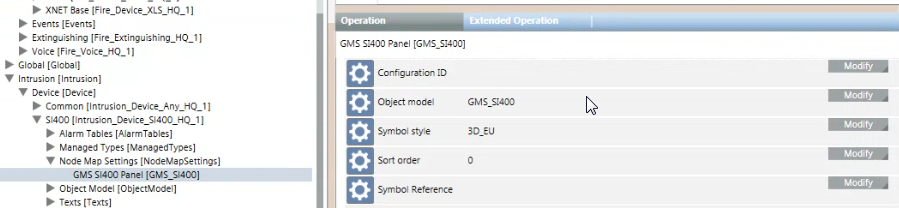

Node Map
This section provides reference information about the Node Map configuration in the library.
For configuration instructions, see the engineering step-by-step section. See also the operating reference section.
Node Map Engineering Overview
The Node Map is an application for monitoring and controlling your site based on the installed control panels (nodes). On Desigo CC stations configured with the appropriate Client Profile, the Node Map displays at the bottom of the screen, and presents the nodes as graphic symbols that provide a quick status summary.
NOTE: To properly show the event conditions, make sure that users have visibility on the control panels objects in the Management View. If any import selections or scope configuration prevent users from accessing the Management View of any objects, then the corresponding event conditions will not properly display in the Node Map.
Node Map Library Configuration
The objects that appear in the Node Map are configured in the system library entries called Node Map Settings.
The Node Map Settings objects are typically configured in the device libraries of the panels. Under Node Map Settings, you need to add one element per object model.
Node Map and Device View
In the Flex client, a Device View snapin provides a similar functionality to Node Map on the thick client. The Device View will display all the objects for which a Node Map Settings entry is configured in the device library. For more information see Customizing the Node Map .
Node Map Settings
In the Node Map Settings, each item includes the following properties:
- Configuration ID
This is an optional field that acts as a filter. In the drop-down list, you select one of the configurations, which results in setting the corresponding Configuration ID.
NOTE: Use this filter to enable only some of the Node Map Settings objects. If the LDL profile file contains a Configuration ID, then the object model objects in the Node Map Settings objects must contain the same ID to be enabled in the Node Map. Object models with a different ID or no ID at all will be excluded. - Object Model
This is the object model whose instances will display in the Node Map. - Flex Client Only
If set to True, the items corresponding to the object model will appear only in the Device View snapin of the Flex client, but not in the Node Map of the thick client. If set to False they will appear in both the Node Map and Device View. - Symbol Style
This is the graphical style used to represent the object model instances in the Node Map. Based on the selected style, the style default symbol is then taken from the function or object model configuration. - Sort Order
This is a numeric field that you can use to establish an order in the symbols that display in the Node Map. Sort Order=0 means that no sort is applied. Instead, use a value from 1 to 5 to indicate a sorting priority (1= first, 5 =last).
Configure the sort order in all Node Map Settings objects to define the sort you want to set. - Symbol Reference
This is an optional field where you can directly set the symbol that will represent the object model instances in the node map. Use the symbol reference to select a symbol different from the one in the function or object model. - Include Hidden Alarms
If set to True, the Node Map takes into consideration hidden alarms that do not display in Event List.

The remaining parameters are not used for the DMS Node Map application.
- Group ID
Enter an optional group ID >0 to group multiple object models in the same user interface element. The object models with the same group ID will be grouped together. - Group – Text Group
In the first object model of a group (Group ID >0), optionally enter the text group name used to choose the name of the group of object models. If this parameter is not set, the name of the first object model will be used for the group of object models. - Group – Text ID
In the first object model of a group, enter the text ID in the text group used to name the group of object models in the Node Map. If this parameter is not set, the name of the first object model will be used for the group of object models.